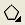
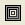
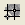
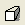
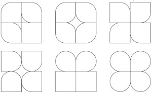
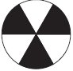
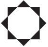
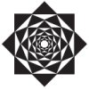

Номер учебного элемента
Учебный материал с указанием заданий
Рекомендации по выполнению заданий, оценка
УЭ – 0
Цель: научиться работать с геометрическими примитивами в программе Corel Draw.
Внимательно прочитайте цель урока
УЭ – 1
Подготовка к работе.
I. Подготовьте устные ответы на следующие вопросы:
-
Что такое векторная графика?
-
Чем отличается векторная графика от растровой?
-
Для создания каких видов изображений целесообразней использовать редакторы векторной графики?
-
Какие основные инструменты работы с изображением присутствуют в большинстве графических редакторов?

II. Оцените свои знания.
Оценивается 4-мя баллами
УЭ – 2
Изучение нового материала
Цель: получить представление об основах работы в программе Corel Draw.
Задание: внимательно ознакомьтесь с теоретическим материалом учебника (лекции 1-3).
План:
-
Ознакомиться с интерфейсом программы.
-
Изучить способы манипулирования объектами.
-
Рассмотреть инструменты для создания геометрических примитивов.
Акцентируйте внимание на общих принципах работы с объектами
УЭ – 3
Цель: самостоятельно изучить основы работы с геометрическими примитивами.
I. Ответьте на тестовые вопросы:
-
Какой вид графики используется в Corel Draw?:
-
растровый;
-
векторный;
-
фрактальный;
-
точечный.
-
-
Какой инструмент рисует многоугольники?:
-

-

-

-

-
-
При рисовании прямоугольников клавиша Shift используется для:
-
представления фигуры в виде правильного квадрата;
-
построения фигуры от центральной точки в стороны;
-
включения или отключения режима скругления всех углов;
-
управления ориентацией страницы.
-
-
Для чего используются маркеры габаритной рамки в виде прямоугольников (
 ), располагающихся в углах и на серединах сторон:
), располагающихся в углах и на серединах сторон:
-
для указания месторасположения объекта;
-
для скругления углов;
-
для выбора системы координат;
-
для изменения геометрических размеров выделенных объектов.
-
-
При рисовании многоугольников клавиша Ctrl используется для:
-
изменения количества вершин или сторон многоугольника;
-
построения фигуры от центральной точки в стороны;
-
построения правильного многоугольника;
-
установки центра вращения.
-
-
Какой инструмент используется для изменения внешнего вида многоугольника:
-
Shape (Форма);
-
Pick (Выбор);
-
Zoom (Масштаб);
-
Object (Объект).
-
II. Проверка правильности выполнения заданий.
Оценка работы (каждый правильный ответ оценивается в 1 балл, если в ответе есть ошибки – 0 баллов). Проанализируйте ошибки.
Результат(в баллах):
За каждый правильный ответ – 1 балл
Результаты проверяет программа
УЭ – 4
Закрепление изученного материала.
Цель: выявить уровень усвоения нового материала.
Задание 1:
Настройте рабочую область следующим образом:
-
выберите формат бумаги А4;
-
установите альбомную ориентацию бумаги;
-
установите в качестве единицы измерения миллиметры;
-
проверьте наличие в окне программы следующих панелей:
-
панель инструментов;
-
панель свойств;
-
стандартная;
-
цветовая палитра.
-
-
при необходимости включите их отображение.
Задание 2:
-
Используя скругление углов, нарисуйте следующие изображения:
 -
С помощью секторов и дуг нарисуйте следующее изображение:
 -
Изменяя параметры угла поворота и размеры сложных звезд, создайте следующее изображение:
 
Оцените свою работу.
Критерии оценки:
-
нет ошибок – 5 баллов;
-
до 2-х ошибок – 4 балла;
-
3, 5 ошибки – 3 балла;
-
6 и более ошибок – 2 балла.
За правильное выполнение 1-го задания – 1 балл
За правильное выполнение каждой фигуры из задания 2 – 1 балл
УЭ – 5
Подведение итогов урока.
-
Прочитайте цели урока.
-
Достигли ли Вы цели урока? В какой степени?
-
Оцените свою работу.
Подсчитайте количество баллов, которое Вы набрали при выполнении заданий.
Поставьте себе оценку.
Индивидуально
Заполнить лист контроля